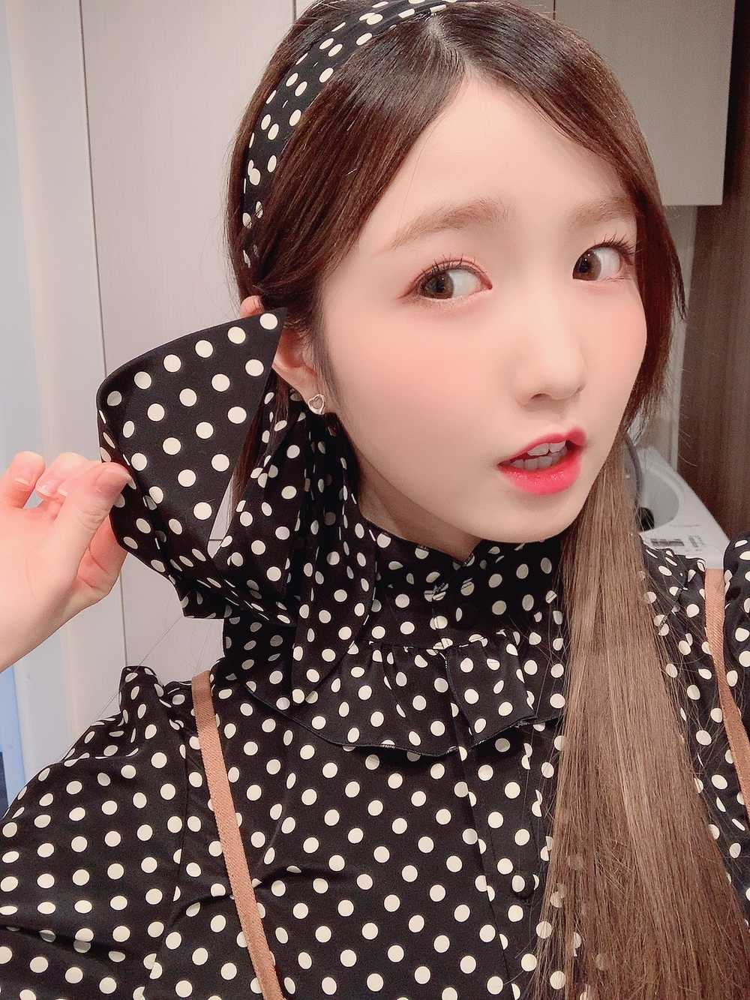

こんばんは🌇
ひいだよ🍓
この髪に巻いてるヘアバンド
もともとはトップスの首に巻くスカーフとして
ついてたものなんです💡
ちょっとアレンジして着てみたよ👗💕
夜ご飯食べましたか？
ひいは食後のコーヒータイムなう☕️
でも夜にコーヒー飲むとカフェインで
眠れなくなっちゃうからカフェインレスの
コーヒーを飲んでるよ🥰
朝起きてからとか運動する前とかは普通の
コーヒーを飲むんだけど
その他はだいたいデカフェのを飲むかな🧐
一応そういうところにも
気を遣ってみてる🍀
いや〜今日は本当にあったかくて
びっくりだった😳
お散歩もしちゃったもーん👟💨
でも聞いた情報によると
来週からまた寒くなるんだとか😵
体調管理気をつけましょう💦
あと今日は久しぶりにメイクしなかった😅
練習のときだいたいの日は
してるんだけどね！！
よく「なんで練習の日もメイクしてるの？」って聞かれることあるんだけど…
メイクするとなんか
自信持って踊れるっていうか🤔
まあ単純な一言でいうとするなら
「鏡を見たときの自分に
失望しないように」 ですねㅋㅋㅋㅋㅋ
メイクしてるとちゃんと鏡の中の自分を
見ることができるんです👀
してないときは気づいたら
斜め上を見てることが多いかも🤨
でも時には肌を休ませるのも大切だから
今日はしませんでしたㅎㅎㅎㅎ
そんな日がたまにはあってもいいよね？😌
あ、今日何歩くらい歩いたかなって見てみたら
なんと11130歩だってよ😳
いっぱい運動したなあ〜っ😇
이호は今日どれくらい歩いたかな？
ひいと勝負だ🤜🤛
それじゃあまた〜
오늘은 산책을 했어요~👟💨
11130보 걸었어요!!
날씨가 따뜻해서 좋았어요😇
근데 다음주는 또 추워진다고 들었는데 그거 실화??ㅜㅜ
맨날 따뜻하면 좋겠는데 ㅜㅜ
아 맞다💡
이호는 (은) 마라탕을 먹어본적이 있어요??
너무 궁금한데 아직 한번도 안 먹었거든요ㅜㅜ
혜원언니가 「토미야 빨리 마라탕 먹어」라고
하루에 한번씩은 그렇게 말해요ㅋㅋㅋㅋㅋ
게다가 문자까지 와요🤣ㅋㅋㅋㅋㅋ
언니 너무 귀엽지 않아요??🙈ㅎㅎㅎㅎ
근데 마라탕도 있고 마라샹궈도 있잖아요?
차이가 뭘까...🧐
아무튼 먹고보고싶다🥺

ばいばーい👋
ひいまる🥟